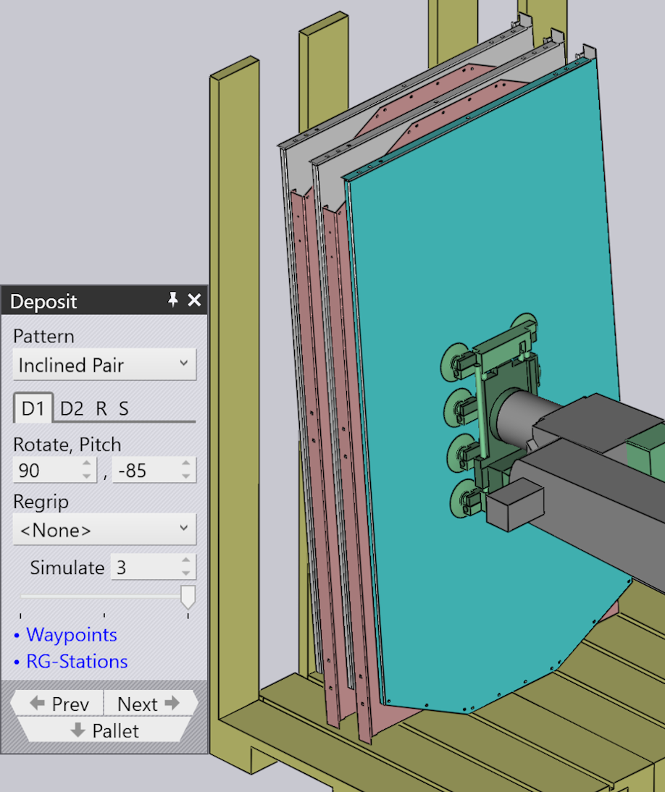

Tipe pola deposit
Simple Grid
Pola Simple Grid adalah yang paling umum digunakan, dan hanya menumpuk komponen dalam grid persegi panjang di palet.
Ketika kita menggunakan posisi Simple Grid, hanya satu posisi deposit D1 tersedia secara default.

Weave
Pola Weave berguna untuk komponen yang panjang dan tipis. Komponen di lapisan D2 ditempatkan 90° dari komponen di lapisan D1 seperti ditunjukkan di samping.


-
Pengaturan Weave mengontrol jumlah komponen yang ditumpuk berdampingan di setiap lapisan weave.
-
Gap adalah jarak antara masing-masing komponen dalam weave
-
Pengaturan Grid pada tab Repeat kemudian dapat digunakan untuk mengulang seluruh tumpukan weave beberapa kali di palet. Dalam contoh ini, tumpukan weave diulang dua kali (2 kolom, 1 baris).
-
Pengaturan Gap (Z,X) pada tab Repeat digunakan ketika weave diulang dan menentukan jarak antara lapisan weave.
Alternating
Pola Alternating adalah yang paling fleksibel. Dalam pola ini, Anda dapat mengontrol orientasi, flip dan pergeseran relatif dari setiap lapisan bergantian.
Pola Alternate memberikan penumpukan komponen yang lebih stabil dan juga kompak.
Ketika kita menggunakan pola Alternating, posisi deposit D1 dan D2 bersama dengan Regrip R1 tersedia secara default.
| Sesuaikan nilai Delta shift di D1, D2 dan tambahkan Regrip untuk mengunci komponen satu sama lain. |

Alternating Batch
Pola Alternating Batch mirip dengan pola alternating, tetapi dengan kemungkinan untuk menumpuk komponen dalam batch dan lapisan bergantian.
Batch shift digunakan untuk memindahkan komponen ke dan dari sumbu Z dan X dalam batch.
Batch count digunakan untuk menentukan jumlah komponen per batch per deposit D1, yang dapat berkisar dari 1 hingga 50. Dalam contoh di bawah ini diatur ke 5.
Delta shift digunakan untuk memindahkan seluruh deposit D1 yang terdiri dari batch ke dan dari sumbu Z dan X.


Gunakan opsi layers di tab Repeat grid (R) untuk menentukan jumlah batch per deposit. Dalam contoh di bawah ini, diatur ke 2.

Drop to Basket
Pola ini digunakan untuk menjatuhkan komponen kecil ke dalam keranjang pengumpul, menggunakan gripper mekanis.

Conveyor
Pola Conveyor digunakan untuk mendeposit komponen pada konveyor komponen. Opsi ini penting ketika komponen tipis panjang dideposit pada konveyor.
| Ketika gripper jaw mekanis digunakan untuk komponen ukuran sedang, semua tipe pola lainnya akan dinonaktifkan untuk pemilihan, kecuali pola conveyor. |

Inclined
Pola Inclined digunakan untuk menumpuk komponen secara vertikal terhadap dinding (atau palet yang memiliki dinding samping).
| Pola ini tidak selalu tersedia. Komponen harus cukup besar agar ini layak. Untuk komponen kecil, robot tidak dapat mencapai cukup rendah untuk menumpuk komponen terhadap dinding. |

Inclined pair
Tipe pola ini sangat mirip dengan pola Alternating, kecuali komponen dideposit secara vertikal sebagai pasangan.
Regrip tambahan diperkenalkan baik di deposit D1 atau D2 untuk membuat pasangan.
Auto-pitch menentukan sudut kemiringan tumpukan secara otomatis.
Pengaturan Pitch digunakan untuk menyesuaikan sudut kemiringan penumpukan dan nilai Delta shift digunakan untuk memindahkan komponen di sumbu X dan R untuk membuat tumpukan yang lebih kompak.

Manual
Pola Manual digunakan untuk menempatkan setiap lapisan komponen dengan orientasi yang sedikit berbeda.

-
Gunakan tombol Add untuk menambahkan komponen baru di atas lapisan paling atas.
-
Gunakan tombol navigasi di sebelah tab Dn untuk pergi ke lapisan sebelumnya atau berikutnya.
-
Pengaturan Delta shift, Rotate dan Pitch dapat digunakan untuk menyesuaikan komponen agar duduk lebih baik di komponen di bawah. Anda juga dapat menggunakan Delta shift dan klik pada Auto-pitch untuk meminta TecZone Bend menghitung sudut pitch optimal.
-
Gunakan tombol Remove untuk menghapus komponen paling atas.
-
Setelah tumpukan manual dibuat, Anda dapat menggunakan pengaturan pada tab Repeat (R) untuk mengulang tumpukan yang sama di palet. Gambar di atas menunjukkan tumpukan yang sama diulang untuk 2 kolom, 1 baris dengan jarak 250 mm antara kolom.
-
Pengaturan pada tab Sequence (S) dapat digunakan untuk mengontrol apakah komponen ditumpuk by layer atau by pile. Jika Anda menggunakan penumpukan pile-by-pile, semua komponen pada pile pertama selesai sebelum kita mulai pada pile kedua.